一認同的焦慮
人的一生，究竟要經歷多少次的崩解，才能學會如河水般共融並存？
與那些陌生的、黑暗的、失語的族類共融並存。復返拖磨，如潮汐起落。時而沖破堤岸衝出一個缺口，時而帶來遠古的貝類陶壺，拼出另一個已然失傳卻可能異常動人的故事。
但是沿河而生的族類，為了區隔彼此，拓展領地，必需不時呼喊我族的名，凸顯我族的獨特。於是身份的認同，成為必須構築的防波堤。
我也會不時敲自己的門，不同的我一直不停的叩問我究竟是誰。
如果我是一條河，我不會需要思考一樣的問題。共融並存就是我的本質。
在岸邊生活的人們，不管使用什麼語言，創建什麼城鎮國家，流入哪些飲食的殘跡，河水依然倒影著日與月，即使人們為它冠上不同的稱謂。
當我辛苦學習著與不同的自我共融並存時，在同一個名字召喚下，認同與被認同，同時互相悅納接受，是多麽的不容許。所以，我渴望有一顆智慧的心，能從入海流的歸於虛無，回望出生那一刻的赤裸，讓行旅其間流入身體的異物、沖刷靈魂的龐雜知識，一如河裡滾動復滾動的石頭，自然讓它們一一擱淺吧。直到下一波的潮水再次湧起，沖上岸邊或是衝向大海，沒有任何的目的，因為，它們就是河的一部分。
「認同」，可以挑起一個族群與一個族群的戰爭，生生世世喋喋不休。一個人，也可以在一個名字之下，為不同時期不同的角色，與自己的靈魂爭論到死。
站在捷運復興崗站的月台，迎著風，帶來遠方大屯山系的溼潤氣息。
我正試圖將自己散落各處的破碎思緒，一一重新拼湊。我想起我的父母，他們安靜如河，紛亂的身世，卻從不曾為自己的認同產生困惑。
1949年，他們各自從赤紅的中國逃離，稚嫩的年齡早已識得離別之苦。我無法想像隨船飄蕩的驚惶歲月裡，他們對未來的自己，對未知土地的想像，只能融得下「活下去」。
活著，在雙腳踏上基隆港的那一刻，就註定要與這座島嶼牽繫相連。那時的台灣，對他們來說，是一張陌生的地圖。不是熟悉的上海，也不是江南衢巷穿梭的常州，為了生活，他們隨親人宿居台灣各地，終於覓得落腳處，開始回到學校讀書習字，然後各自謀生工作，相戀結婚。匯聚生命的江河裏有長江、黃河、淡水河、八掌溪，習得的語言裡有吳儂軟語，也有生活所需的國語、台語詞彙。
他們一一都融入生活裡。
當他們用毛筆專注而輕巧地蘸上墨汁，在我的制服名牌與小學課本封面上為我寫下名字，在他們的心裏，會為自己曾經飄零的歲月猛然沖擊嗎？
或者，那早已不是生命展望的方向，因為，他們肩負著如河水般向前奔流不得復返的使命。
如果你和我一樣，試圖將自己散落各處的破碎思緒，一一重新拼湊，你也會知曉，回溯河流的歷史記憶，對一座城市，對於一個宿居此處的人兒，具有多麽重要的意義。
父親和母親蘸著墨汁寫下娟秀的蠅頭小楷時，不曾跳出當下的生存時空，突然向我顯現他們自小習字的環境與苦難。是我，總是忍不住懷想，懷想他們溫柔敦厚的性情與略帶鄉音的口吻，是如何形塑而成今日傲岸又溫暖的模樣？
當我從復興崗捷運站出發，大屯山吹來的風，將帶著我重新繪築五分港溪還是舊雙溪河道時，那原漢生活與河流相依相生的原貌。
爾後，我會站在五分港溪與基隆河交會的出口，後方一處傲岸自盼的水利工程，遮住回望五分港溪的來時路，而前方不遠處，則是灌溉良田的八仙圳。這裡，交織著許多看不見卻隱隱存在的時間秘密。循著這些看不見的歷史軌跡，每一條，都將與這條溪緊密相繫。
我開始這一趟向內凝視的旅程，探尋凱達格蘭族與漢人曾在此留下的生活足跡，渴望在實體地景與水文設施的指引下，觸摸到原漢遷徙與水文變遷的歷史脈絡，並在其中找到自己靈魂的錨點。
即使我知道，我終將無法尋回最初的它。
二嗄嘮別的風在高處俯瞰消逝的輪廓
離開捷運站，我緩步走向位於高處的嗄嘮別公園。這是一段需要稍微耗費氣力的上坡路，如同在記憶的泥沼中跋涉。天空抹上一層莫蘭迪色調的灰藍，雲層堆疊出如日式水墨般清冷的色塊。
「嗄嘮別」（Kalaobie），這個充滿異質感的詞彙，是復興崗一帶的舊稱。相傳這句平埔族語隱含著「孩童因飢餓而哭泣」的原意。當我站在這座建於山坡上、擁有極為開闊視野的公園時，一望無際的關渡平原映入眼簾，五分港溪成為讓我遠望的起點。讓這一趟原漢交織的走讀起點，瞬間呈現強烈的立體感與歷史張力。
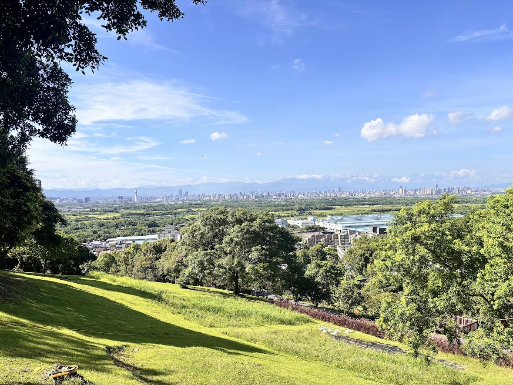
我將位於桃源溪畔的嗄嘮別公園設為這條路線真正的第一站，作為五分港溪原漢歷史的前導與俯視點。站在這裡，向東南方眺望，整片關渡平原的綠意與北投機廠錯落的設施盡收眼底。俯瞰的視野，彷彿重現當年退居邊緣高地的原住民，或許也是這般，當時的他們也曾靜靜地望向自己曾經馳騁、後來卻被漢人全面開墾成水網與稻田的平原。那是何等的失落？而我在生活中，不斷被現實壓縮、最終導致自我碎裂的過程，比得上那種生存空間被層層替換的痛楚嗎？
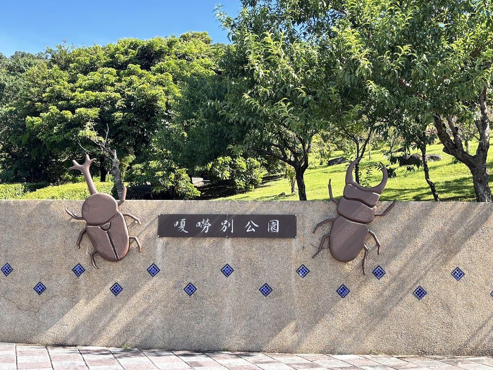
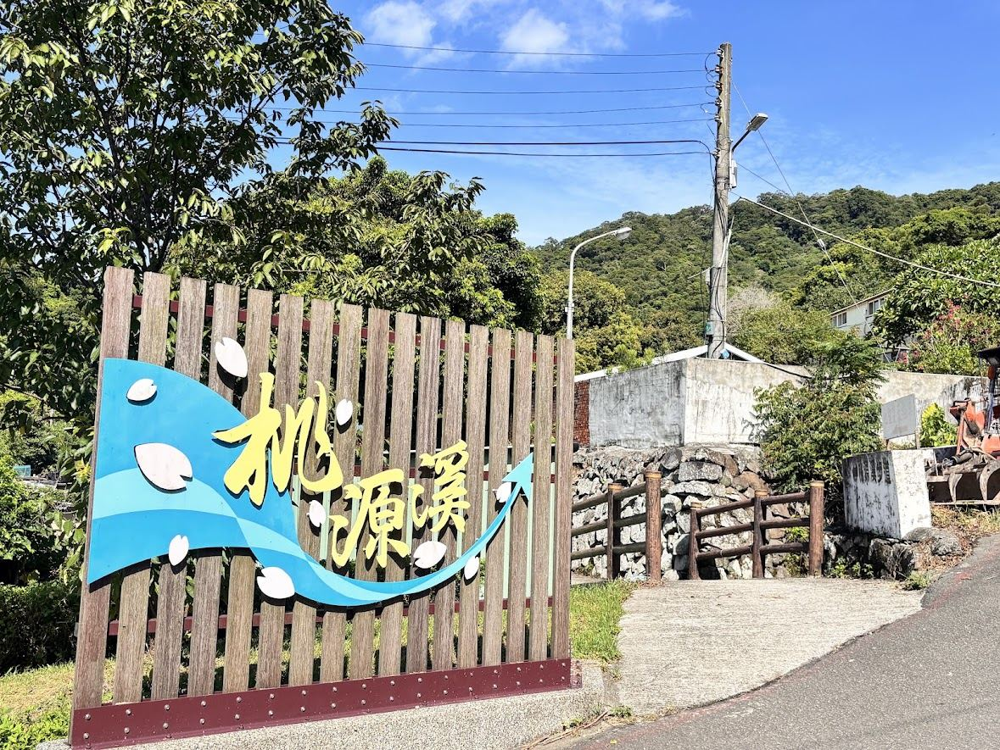
歷史的輪廓在這裡的視野是清晰而哀傷的。嗄嘮別區域的範圍，涵蓋了今日的智仁、文化、豐年、稻香、桃源、一德、關渡等里。它地處大屯山南麓及忠義山、關渡山東麓，其名正是凱達格蘭平埔族社名。地名的原點，大約位在今日桃源國小南方至捷運線一帶。在清領時期，這裡以牛磨坑溪與北投為界，溪的東邊是漢人處，以西則是平埔族人。由溪頭至溪尾皆為番社，分別被稱為頂社、中社、下社。
頂社，又稱三層崎，其址位在今日貴子坑休閒活動區、水咚咚瀑布附近；中社，指今日智仁里及國防大學復興崗校區北面一帶；而下社，則位在今日豐年里和平路二段以西捷運線兩側，居民以何、潘兩姓為主。那條作為天然界線的牛磨坑溪，也因此有了「番仔溝」之稱。
在嗄嘮別公園高地上，仍保留著兩座清朝時期的城隍廟與土地公廟，其中一尊磚胎土地公的背還刻著「衛台營」三字，默默承載著清代軍事與民間信仰交織的歷史記憶。從這裡的漢人神祇作為起點，可先近身觀察漢人農墾社會的土地公樣貌，之後走下山坡，回到關渡平原，再沿著貴子坑溪，漢人開墾的水圳流向，來到「番仔厝綠地」與「保德宮」時，再親眼對比，一步步走進五分港溪的故事裡，相信歷史的衝擊感將會非常強烈。
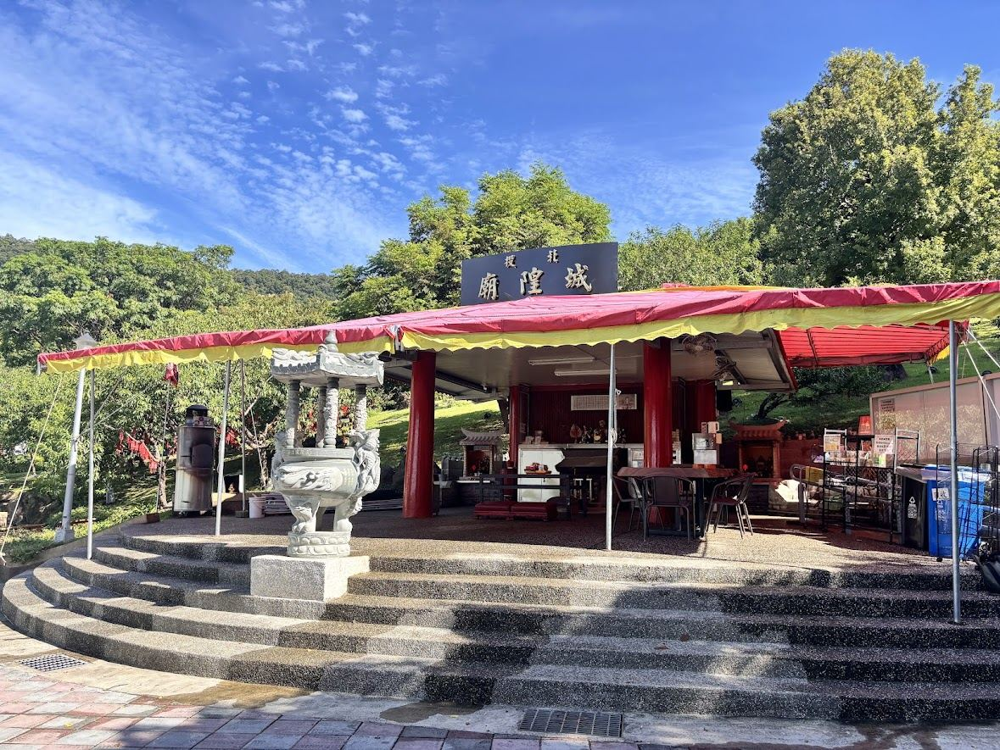
三順坡而下退卻的步伐與信仰的交界
從嗄嘮別公園出發，沿著中央北路，穿越捷運車行地下道，轉進貴子坑溪步道，一段隨行的平疇綠野，令人心曠神怡。不遠處是沿著水圳齊行的田心仔自行車道，可以在兩旁的光蠟樹上找尋鍬形蟲的足跡。一路順著下坡輕鬆步行，是適合內在梳理的路程。隨著步伐專注的邁進，某些在日常生活中被工作、人際與焦慮切割得支離破碎的自我，似乎也不再重要。常在強勢的主流價值觀面前，不斷退卻，那些交出的自己，此刻也安靜如一望無際的關渡平原。
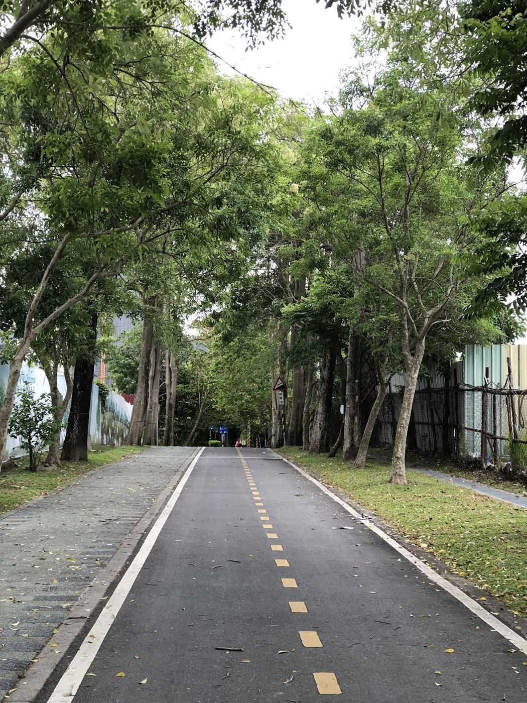
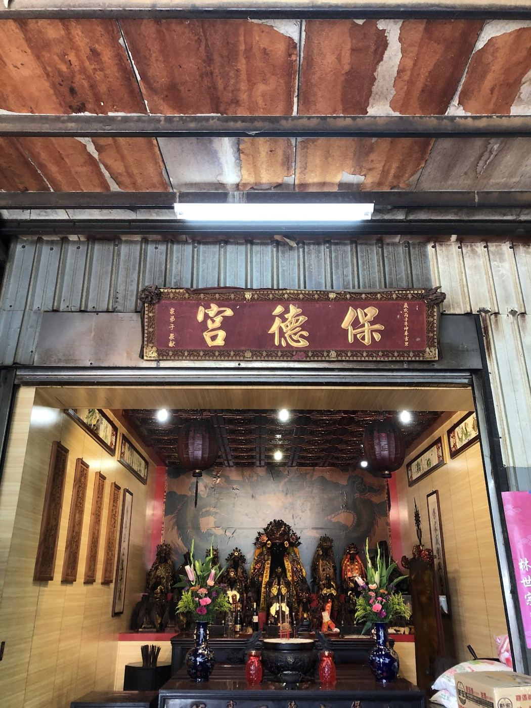
步行前往番仔厝，來到保德宮前，正值農曆初一，央請保德宮主委請出土地公，可以審視背面刻的「平埔社」三字，這尊土地公不僅是漢人的農業守護神，更被視為平埔族祖靈信仰與漢人宗教交融的見證。而「番仔厝」這個舊地名，正是原住民在此「下社」群居的直接證據。
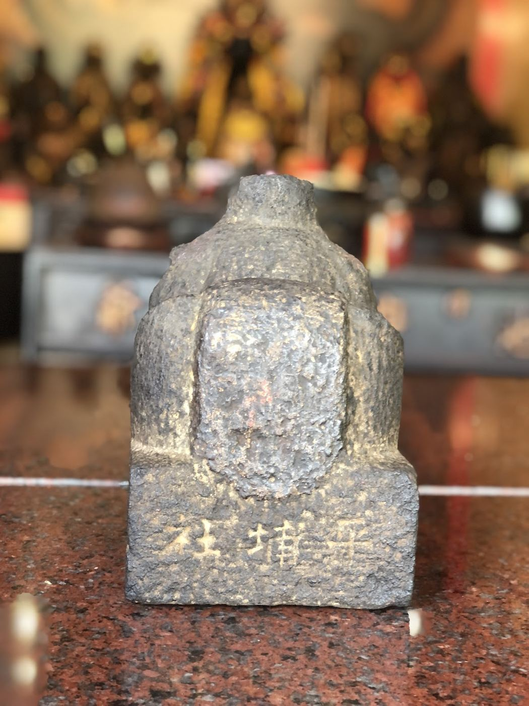
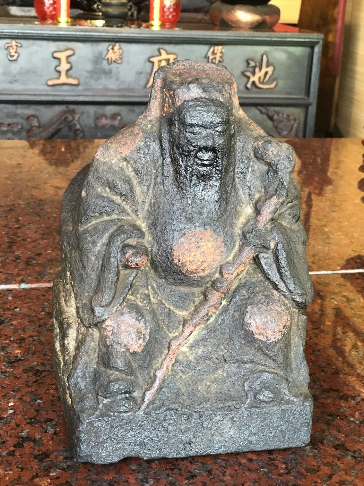
站在保德宮前，香煙裊裊升起。隨著漢人帶來農耕與契約，日人據台，原住民族群也逐漸從北投社「頂社」往山下遷徙。這裡是見證身分轉換與土地流失的第一現場。兩種文化在神桌上達成了某種靜默的妥協。
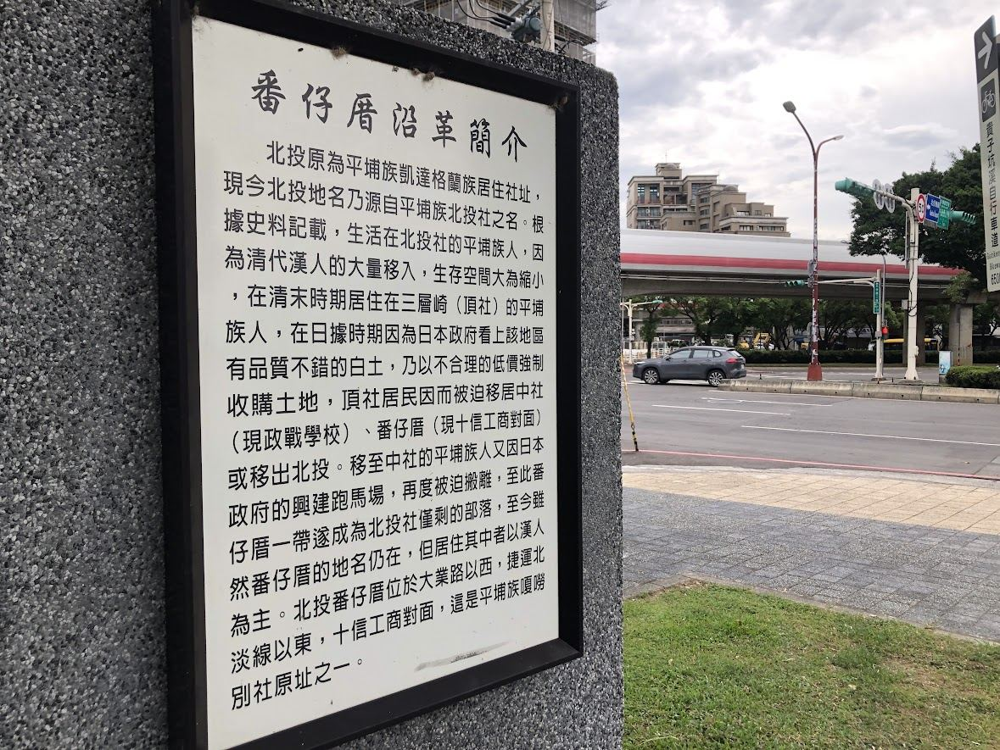
我是否也能在內心的矛盾與衝突中，尋找一處可以安放苦處的所在。
四水的規訓從自然流淌到壓力箱涵
離開保德宮，沿著大業路前行，來到了磺港溪分洪壓力箱涵。對於路過的人而言，可能只是一座不起眼的設施，但其實正與「五分港溪」的當代價值不謀而合，因為這是一座絕佳的「現代水利防災」戶外教室。
漢人入墾後，為了種植水稻，大量開鑿水圳與改變水道；而北投人為了防止磺港溪淹水，得建造巨大的壓力箱涵。這些看似冷硬的水泥結構與金屬閘門，代表著不同時期人們對待「水」的態度與工程技術。水，原本是自由的，是凱達格蘭族人順應自然、賴以為生的命脈；但在漢人與現代文明的介入下，水被切割、被引導、被改變河道，如今雖成為農業經濟的工具，卻也成為城市安全的隱患。
原本擁有如野溪般奔放的情感與天賦，卻在成長的過程中，時而為了適應體制、為了不「氾濫」成災，被迫建立起內在的壓力箱涵，將真實的情緒深埋在不見天日的地下道中。在既有的社會規訓裡，似乎不傷害他人比不傷害自己還重要，然而，這是真的嗎？
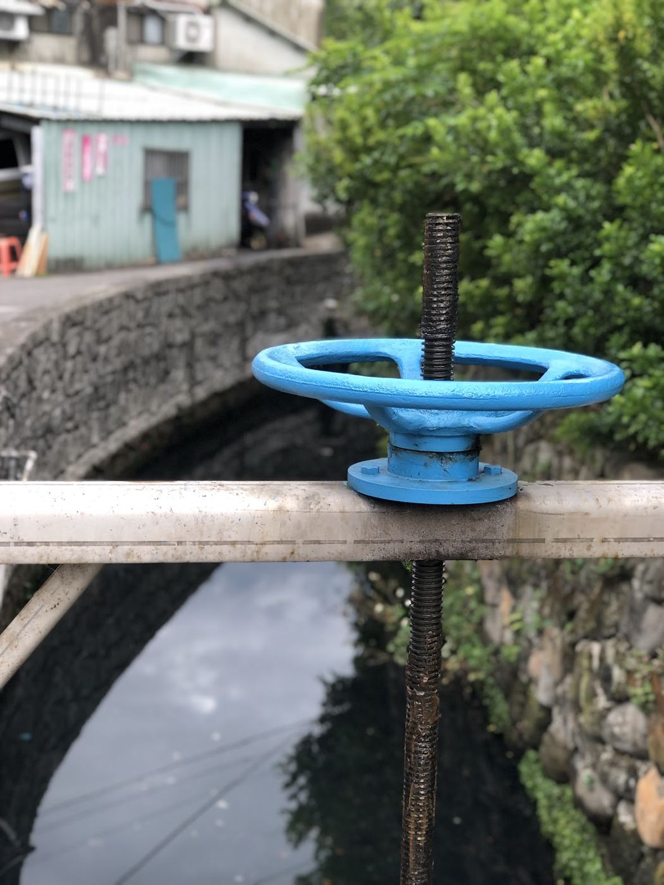
仍然要離開壓力箱涵，走回單純的人行步道。穿過承德路，漫步至八仙圳旁的朝籟橋。站在橋上俯瞰，這裡是聚落與農田水路的交界點。從橋面上望去，左側的磺港溪與右側的八仙圳汩汩而流，朝基隆河方向前行。磺港溪即將流向終點，而八仙圳，則將繼續完成它縱橫平原，灌溉農田的任務。
五潮汐的邊界在五分港溪遇見自己
走出「朝籟橋」，終於抵達了旅程的核心——五分港溪。在這裡，我觀察著五分港溪（舊雙溪河道）與基隆河匯流的出口，以及矗立在附近的「五分港溪防潮閘門」。
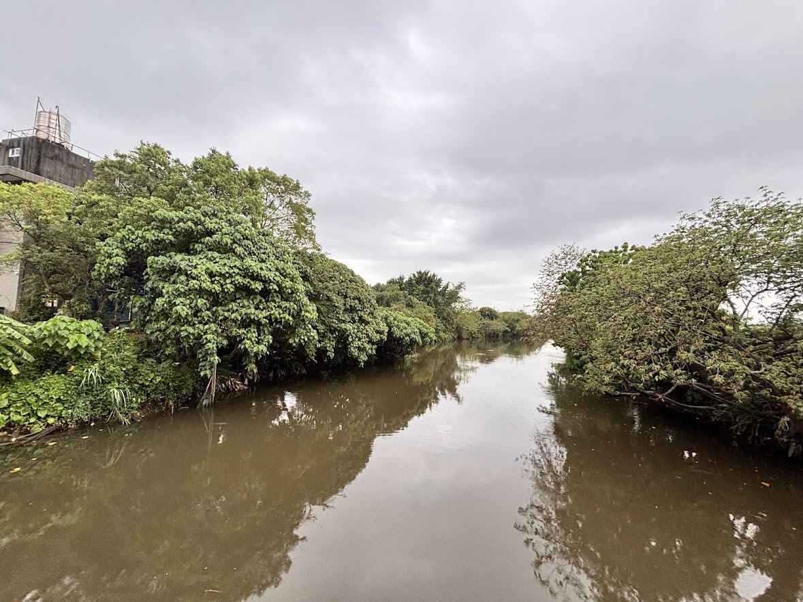
這個巨大的閘門控制著外水與內水的交匯。站在閘門前，聽著水流拍打的聲音，彷彿聽見時間巨大的迴響。在早年沒有現代化防潮設施之前，先民是如何遭受潮汐與水患之苦？而更早之前聚居於此的原住民，又是如何順應自然，利用隨潮汐漲落的水域，捕捉生活所需的魚蝦？
為了保障沿河居民的生活，基隆河邊築起了巨大的堤防，來到這裡，我必須跨過堤防，因為堤防的另一端，正是前往舊雙溪河道的木棧道入口，也就是舊雙溪河步道。
踏上木棧道的那一刻，五分港溪也瞬間為我褪去周遭的喧囂車潮。這段擁有茂密水生植物的土堤溪流，是整趟行程中最接近三百年前臺北盆地原貌的地方。兩側的植物在微風中婆娑起舞，水面上倒映著莫蘭迪藍的天光。
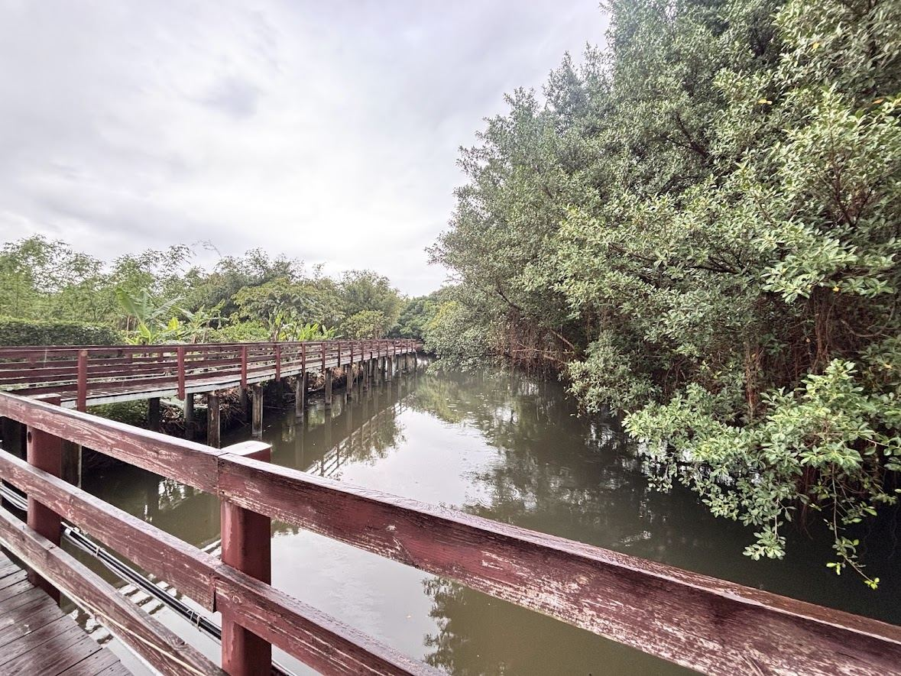
我停下腳步，想像著凱達格蘭族人划著獨木舟（Bangka）穿梭在蘆葦叢間的畫面。那是一個沒有被水泥束縛的年代，人與河川的關係是平等而共生的。
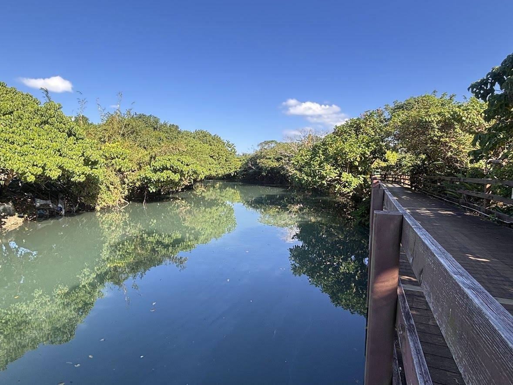
我凝視著五分港溪緩緩流動的溪水。
「你還記得他們嗎？」我在心裡輕聲問著溪水。
溪水沒有回答，只是以一種包容的姿態，靜靜地流淌。
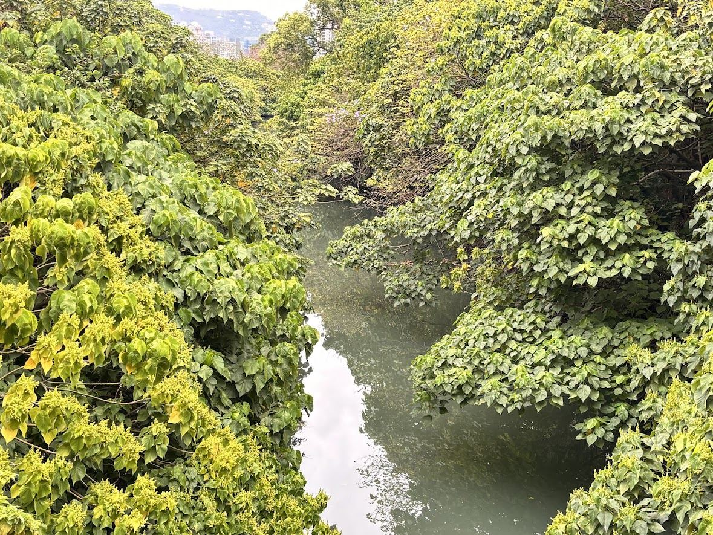
承載著人類變遷河道的斷裂，卻依然以溫柔而平靜的水波，縫合著這片土地的傷口。水面上細碎的波光，每一次的受傷、每一次的失落、每一次的被迫改變，眼前都只是生命河床上再自然不過的沖刷與沉積。
也許我不該害怕破碎，因為我本就是由無數碎片組成的自我。只要願意像這條河一樣，持續地流動、持續地接納，接納那些散落的記憶與痛楚，終將在生命的流域裡重新匯聚，歸入大海。
六匯流入海在洲美尋得平靜
沿著五分港溪，走過即將秋收的洲美農業區，木棧道的盡頭是洲美攔河堰，此次路線的終點來到了洲美聚落的核心——洲美屈原宮。
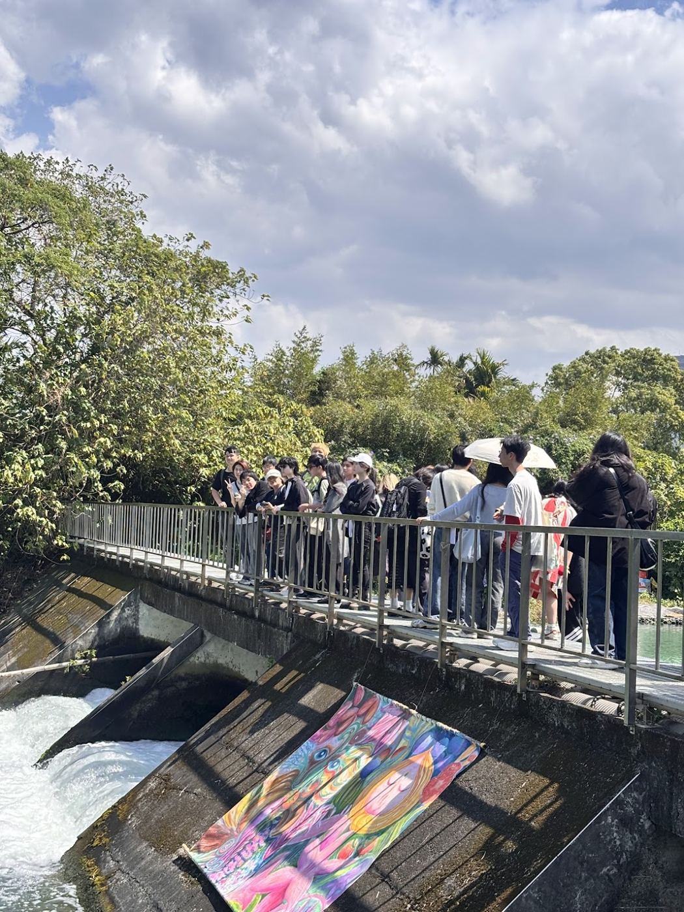
洲美屈原宮，在這裡有著無可取代的指標意義。它象徵著漢人在這片水鄉澤國已經完全定居，並建立起強大的宗族與信仰體系。走在聚落裡，原住民的聚落已不復見，取而代之的是漢人的龍舟文化與宮廟建築。
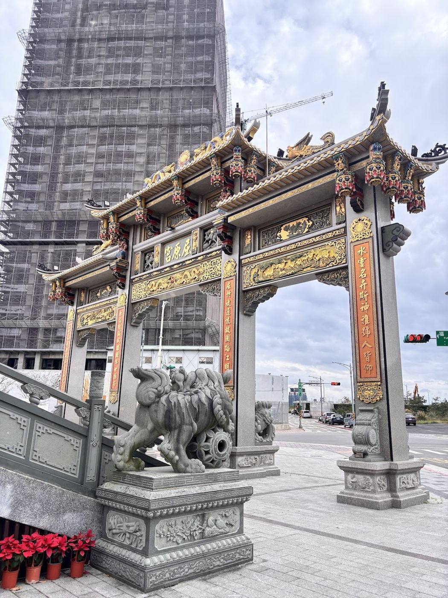
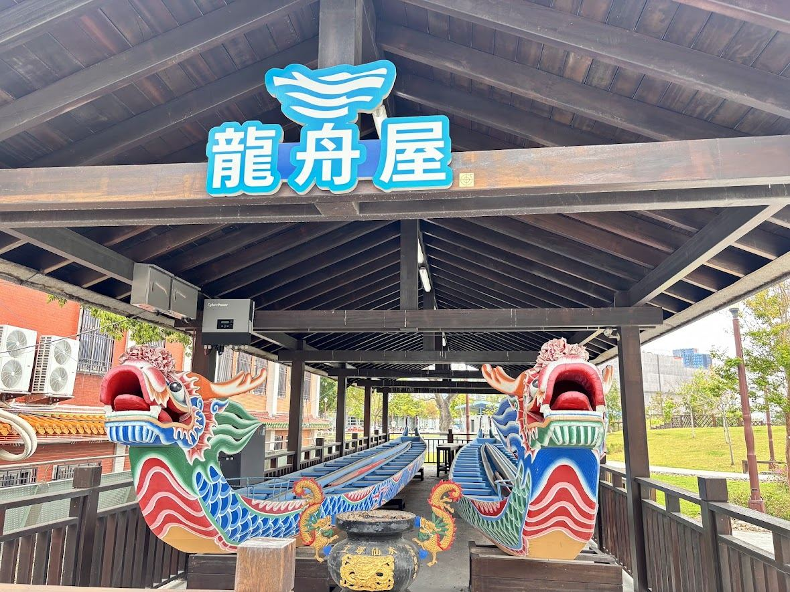
歷史在這裡完成了一次寧靜而徹底的翻頁。
我在屈原宮前駐足，回望來時路。這條「尋水脈、溯族跡」的路線，從前往嗄嘮別公園高地出發，一路走過原漢交界的番仔溝，跨越基隆河堤防與舊雙溪木棧道，與五分港溪一起享受著野性與知性對話的趣味；也讓我在健行的過程中，逐漸體會原漢交融與信仰變遷的意義。
無論歷史如何變遷，五分港溪的水脈，始終與時間的故事相容相連。那些看似破碎的波光水紋，川流不息的河水一片片撿拾了起來，以涓涓細流一一匯聚。也正是因為這些裂痕，讓光得以照進來，也讓水流了出去。
在這片實體地景與水文設施的交織間，我隱隱然也成為了一條河。一條帶著歷史的重量，卻依然願意溫柔擁抱未來的河。
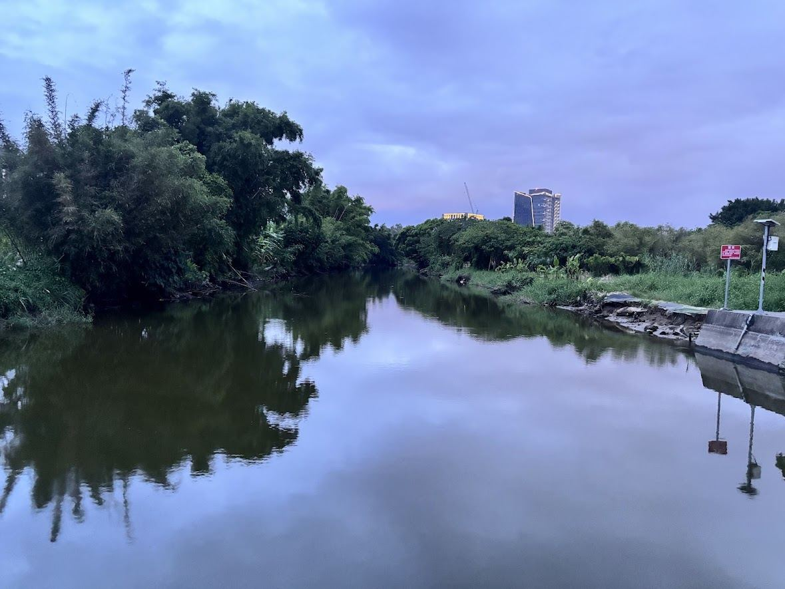
緩緩地，流向那未知而廣闊的海。
即使我知道，我終將無法尋回最初的模樣。
原刊於 2026/11/27《聯合報》副刊